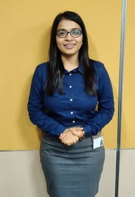

Want a sneak peek of the Investment Banking Sector?
Get all your queries cleared, right here.
Interviewee : Aditi Kambli 5 min read

Q. Who are you?
Ans: Hello everyone, I am Aditi Kambli, a Final Year Financial Engineering student from the department of
Ocean Engineering and Naval Architecture. I interned with Deutsche Bank Global Markets during
summer 2019. I was working with the Rates Index Desk under FIC in DB CIB.
Q. What is the Selection Procedure?
Ans: The selection procedure had an initial CV shortlisting and online test. Around 50 students were
shortlisted by this process. After this I had 4 rounds of interview. The first two rounds were technical
where they tested my logical and quantitative skills and also grilled me on my CV. The third round was
with the senior management, where they mainly tested my confidence and my vision about my future
goals. The final round was with the HR, where they again tested my soft skills and checked if I can fit well
in the DB system.
Q. How to prepare for them?
Ans: One can prepare for the quant from books like Heard on the street and 50 challenging questions in
probability. Also one needs to prepare well on any finance related project they have undertaken in the
past. One must also be very thorough with their CV.
Q. What were the Project Details?
Ans: I mainly worked on a Credit single name momentum Index which is essentially a first of its kind
investment strategy in the institution. I also worked on automation of existing strategies and
implemented few tools on python which increased the efficiency of work for the desk. I worked in the
rates, credit and FX domains.
Q. How was the Company culture?
Ans: The flat hierarchy in DB allows the interns to not only interact with analysts and associates but also with
the senior management. The culture is very accommodating and everyone is very approachable and
eager to help in case of any problem.
Q. Who should ideally apply for the internship?
Ans: The best part of the selection process is that DB doesn’t require a candidate to have any prior
knowledge in finance. They look for excellence in anything that we have done in our past. This allows
everyone an equal chance to apply for the internship.
Q. Any advice?
Ans: My only advice will be to be confident and believe in what you have done till now. The most important
thing is that you should be able to justify what you have done till now and you should have a valid
reason of why you want to join the company and how you can prove to be an asset for them.